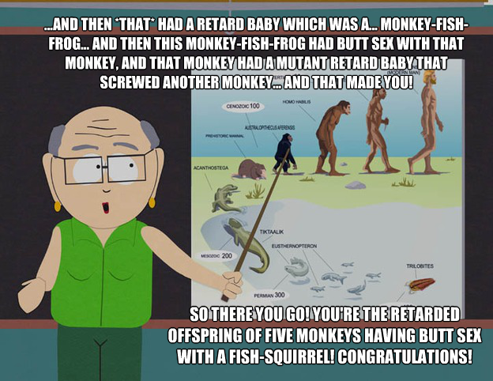

|  |
Josh KofileUT Dallas Graduate I am Joshua Kofile. I graduated from the University of Texas at Dallas in 2018 with a B.S. in Information Technology and Systems with a specialiation in Business Analytics. |
Project Lead: Data Visualization - Small Business Analysis
Data Analyst Lead: Capstone Project
Project and Data Analysis Lead: Business Intelligence Aviaton Project
Project and Data Analysis Lead: Business Analytics Gun Violence Project
| Project Name | Data Analysis: Project Lead - Small Business Analysis | Senior Capstone: Data Analyst Lead - TI & Coveo | Project and Data Analysis Lead: Business Intelligence - Aviation Project | Data Collection and Analysis Lead: Business Analytics - Chicago Gun Violence Project |
|---|---|---|---|---|
| Project Description | Used analytical tools such as Tableau to explore a dataset related to the analysis of overall sales of a small business. The overall goal of the project was to find top selling products, peak sales periods, and optimal working/operating hours. | Used a comibnation of Tableau, Coveo, and coding techniques to help Texas Instruments (TI) develop an alternative to their expiring Google Search Appliance search-engine. Our project also dove a small portion into Machine Learning and other related topics, but only at a rudimentary level. | Used data visualization and analysis tools such as Tableau and coding techniques to analyze 2014 Summer air traffic from Dallas-Fort Worth International Airport (DFW) and Dallas-Love Field (DAL) to find which airlines and which times/days of the week were most optimal to fly on in terms of the least amount of delays, cancellations, and on-time departures/arrivals. | Analyzed crime data in the city of Chicago to find any/all correlations between the type of crime comitted and the specific area of the city that said crime occured in. Like my other projects, heavy use of Tableau and coding techniques - especially Python - were used extensively. In this project, we also integrated ancillary data from the US Census Bureau, amongst others. |
| iOS Development | ✔ |
| Python | ✔✔✔ |
| HTML | ✔✔✔ |
| R | ✔✔ |
| CSS | ✔✔ |